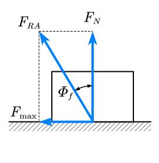
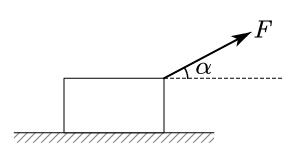
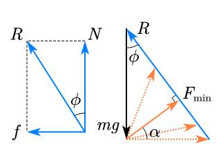

有关摩擦角
前言
最近在读《新概念高中物理读本》时，发现了两道颇为有趣的题目以及其背后蕴藏的知识点，故作此文以记录。
前置知识
数学
常用的三角变换：
二倍角公式
辅助角公式
其中
物理
全约束力与摩擦角[1]
当有静滑动摩擦时，支承面对物体的约束力包含法向约束力 $F_{N}$ 和切向约束力 $F_{s}$（即静摩擦力）。为讨论问题的方便，在某些情况下，把这两个力合起来，即 $F_{RA}= F_{N} + F_{s}$ ，称为全约束力。全约束力的作用线与接触处的公法线间有一夹角$\phi$。当物块处于临界平衡状态时，静摩擦力达到最大值，偏角也达到最大值。称全约束力与法线间的夹角的最大值为摩擦角。
即摩擦角的正切等于静摩擦因数。可见，摩擦角与摩擦因数一样，都是表示摩擦的一个重要物理量。
题目

【题目1】如图1-1所示，质量为 $m$ 的木块，在拉力 $F$ 的作用下，沿摩擦因数为 $\mu$ 的水平地面运动。求拉力 $F$ 最小时的牵引角 $\alpha$ 是多大？最小拉力是多少？
【解1】
显然此时受力平衡，受力分析，解得
利用辅助角代换
当$\alpha+\phi=\frac{\pi}{2}$时，分母达到最大值，$F$最小。于是有
此时有
【解2】
如图，将$f$与$N$合力用$R$代替，可见
注意：这里的$\phi$与上文用辅助角公式的$\phi$不一样。
那么$R$的方向不变，这就变成了三力平衡问题。
由右图可见，当拉力$F\perp R$时，$F$最小，此时$\alpha =\phi$，$F_{min}=mgsin\phi$
因为
所以
【题目2】
如图1-2所示，质量为 $m$ 的木块，在大小为 $F$ 的拉力的作用下，沿摩擦因数为 $\mu$ 的水平地面加速运动。求加速度最大时的牵引角 $\alpha$ 是多大？最大加速度是多少？
【解1】（其实图都没换）
解法与上面高度相似
受力分析，解得
辅助角转化
当$\alpha+\phi=\frac{\pi}{2}$，即$tan\alpha=cot\phi=\mu$时
【解2】
刚刚是平衡力，现在不是了怎么办？
简单，我们将$F$分出一部分$F_{1}$用来加速，剩下的$F_{0}$就照样按平衡分析。
因为加速度肯定向右，所以$F_{1}$也肯定向右，它越大加速度也就越大。
那么为了找出最大加速度时的角度，我们以$F$为半径，转动这个$F$，看看何时$F_{1}$最大。
注意这里的$R$的大小是可变的，因为$F$会减轻支持力。但方向不变，为$\phi=arctan\mu$
由图可见，当$F$运动到$P$点，也就是$R$的平行线的切点时，$F_{1}$最大。
由几何关系可以看出此时$\alpha=\phi$，也就是摩擦角。
于是列式

【练习】
如本题图所示，小物块放在倾角为 $\theta$ 的固定斜面上，它与斜面间的摩擦系数为 $tan\phi$（$\phi$为一确定角度），当用力 $F$ 沿与斜面成 $\beta$ 角方向拉物体沿斜面向上运动时，若想最省力，则应为多大？
——分割线——

【答案】$\beta=\phi$时，$F$最小。
【提示】组成矢量三角形，当$F\perp R$时达到最小值。
【总结】
对于力的角度不确定的最大最小值问题，若题目中存在摩擦，可以用摩擦角解答，也可以用受力分析法解答。
摩擦角是滑动摩擦力与支持力合成后，合力与支持力方向的夹角，可以描述粗糙程度。此合力的大小可以联系到支持力。
- 节选自高等教育出版社.理论力学（I）第八版 ↩